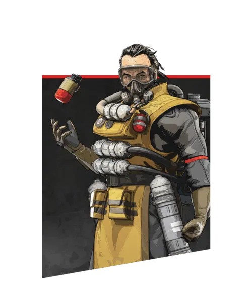
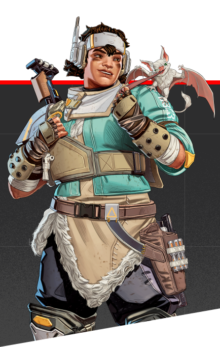
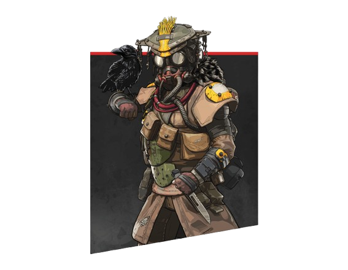
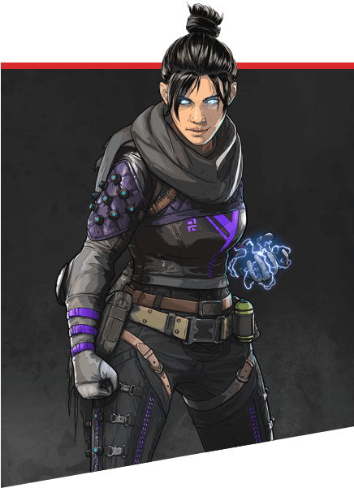
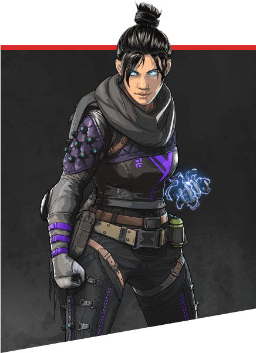
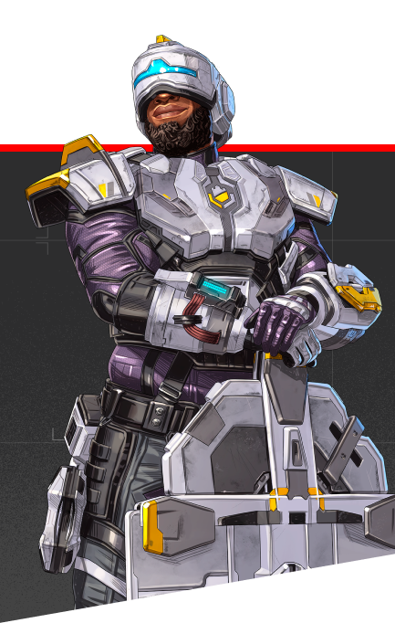
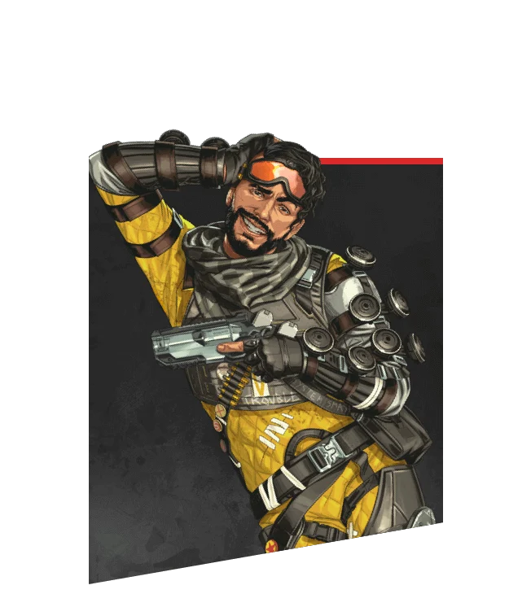

Defensores
As lendas focam em proteger áreas e controlar o campo com escudos e armadilhas. São ideais para segurar posições e garantir vantagem tática para a equipe durante as lutas.


Reconhecimento
As lendas coletam informações e revelam posições inimigas no mapa. São essenciais para antecipar combates e guiar a equipe com vantagem estratégica.
 

Assalto
As lendas são focadas em combate direto e alta pressão ofensiva. São ideais para iniciar lutas e eliminar inimigos rapidamente, abrindo espaço para a equipe.

